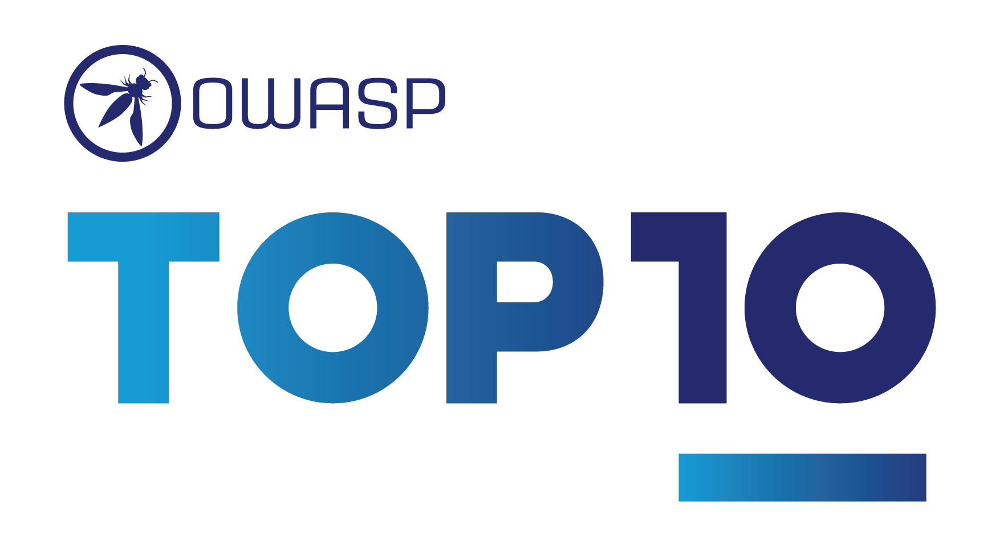
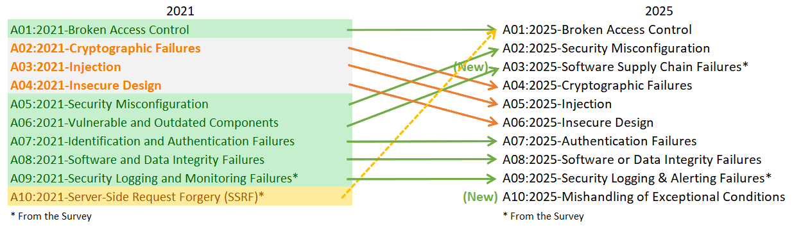

Десять наиболее критичных рисков безопасности веб-приложений
Введение
Добро пожаловать в 8-й выпуск OWASP Top Ten!
Огромная благодарность всем, кто предоставил данные и поделился своими мыслями в опросе. Без вас этот выпуск был бы невозможен. СПАСИБО!
Представляем OWASP Top 10:2025
- A01:2025 - Нарушение контроля доступа
- A02:2025 - Небезопасная конфигурация
- A03:2025 - Уязвимости цепочки поставок программного обеспечения
- A04:2025 - Криптографические сбои
- A05:2025 - Инъекции
- A06:2025 - Небезопасное проектирование
- A07:2025 - Сбои аутентификации
- A08:2025 - Нарушение целостности программного обеспечения или данных
- A09:2025 - Сбои журналирования и оповещения
- A10:2025 - Некорректная обработка исключительных ситуаций
Что изменилось в Top 10 за 2025 год
В Top Ten 2025 появились две новые категории и произошло одно объединение. Мы старались по возможности фокусироваться на первопричинах, а не на симптомах. С учётом сложности разработки программного обеспечения и обеспечения его безопасности создать десять категорий без определённого пересечения практически невозможно.

- A01:2025 - Нарушение контроля доступа сохраняет первое место как наиболее серьёзный риск безопасности приложений; предоставленные данные показывают, что в среднем 3,73% протестированных приложений содержат одно или несколько из 40 CWE этой категории. Как показано пунктирной линией на рисунке выше, Server-Side Request Forgery (SSRF) теперь включён в эту категорию.
- A02:2025 - Небезопасная конфигурация поднялась с 5-го места в 2021 году на 2-е в 2025. Ошибки конфигурации встречаются в данных этого цикла чаще. 3,00% протестированных приложений имели одно или несколько из 16 CWE этой категории. Это неудивительно, поскольку всё больше поведения приложений определяется настройками конфигурации.
- A03:2025 - Уязвимости цепочки поставок программного обеспечения — расширение A06:2021 — Уязвимые и устаревшие компоненты с более широким охватом компрометаций, происходящих внутри или в рамках всей экосистемы зависимостей программного обеспечения, систем сборки и инфраструктуры распространения. Эта категория была признана главной проблемой в опросе сообщества. Категория содержит 5 CWE и ограниченно представлена в собранных данных, однако мы считаем это следствием сложности тестирования. По частоте встречаемости в данных она наименьшая, зато имеет наивысшие средние оценки эксплуатируемости и воздействия по CVE.
- A04:2025 - Криптографические сбои опустились на две позиции — с 2-го на 4-е место. Данные показывают, что в среднем 3,80% приложений имеют одно или несколько из 32 CWE этой категории. Данная категория нередко ведёт к раскрытию конфиденциальных данных или компрометации системы.
- A05:2025 - Инъекции опустились на две позиции — с 3-го на 5-е место, сохраняя своё положение относительно криптографических сбоев и небезопасного проектирования. Инъекции — одна из наиболее тестируемых категорий с наибольшим числом CVE среди 38 CWE. Диапазон охватывает Cross-site Scripting (высокая частота/низкое воздействие) и SQL-инъекции (низкая частота/высокое воздействие).
- A06:2025 - Небезопасное проектирование сместилось на две позиции — с 4-го на 6-е место, уступив место небезопасной конфигурации и уязвимостям цепочки поставок. Категория введена в 2021 году, и с тех пор мы наблюдаем заметное улучшение в отрасли в части моделирования угроз и акцента на безопасном проектировании.
- A07:2025 - Сбои аутентификации сохраняет 7-е место с небольшим изменением названия (ранее «Сбои идентификации и аутентификации»), точнее отражающим 36 CWE этой категории. Категория остаётся важной, однако возросшее использование стандартизированных фреймворков аутентификации, по всей видимости, снижает частоту сбоев.
- A08:2025 - Нарушение целостности программного обеспечения или данных остаётся на 8-м месте. Категория сосредоточена на несоблюдении границ доверия и проверки целостности программного обеспечения, кода и артефактов данных на более низком уровне, чем уязвимости цепочки поставок.
- A09:2025 - Сбои журналирования и оповещения сохраняет 9-е место. Название немного изменено (ранее «Сбои журналирования и мониторинга безопасности») для акцента на важности функции оповещения, необходимой для своевременного реагирования на значимые события в журналах. Хорошее журналирование без оповещений имеет минимальную ценность для выявления инцидентов. Эта категория всегда будет недостаточно представлена в данных и вновь включена в список по результатам опроса сообщества.
- A10:2025 - Некорректная обработка исключительных ситуаций — новая категория 2025 года. Она содержит 24 CWE и охватывает ненадлежащую обработку ошибок, логические ошибки, небезопасные состояния сбоя и другие связанные сценарии, возникающие при нештатных условиях.
Методология
Данный выпуск Top Ten по-прежнему основан на данных, но не слепо ими управляется. Мы ранжировали 12 категорий по предоставленным данным и позволили двум категориям попасть в список по результатам опроса сообщества. Причина проста: анализ предоставленных данных — это взгляд в прошлое. Исследователи безопасности тратят время на выявление новых уязвимостей и разработку методов тестирования. Интеграция этих тестов в инструменты и процессы занимает от нескольких недель до лет. К тому моменту, когда мы можем надёжно тестировать уязвимость в масштабе, может пройти несколько лет. Существуют также важные риски, которые мы, возможно, никогда не сможем надёжно протестировать и отразить в данных. Для балансировки мы используем опрос сообщества, спрашивая практикующих специалистов по безопасности и разработке, что они считают существенными рисками, недостаточно представленными в тестовых данных.
Как устроены категории
Несколько категорий изменились по сравнению с предыдущим выпуском OWASP Top Ten. Ниже — краткое изложение изменений структуры категорий.
В этой итерации мы запрашивали данные без ограничений по CWE, как это было в выпуске 2021 года. Мы запрашивали количество протестированных приложений за заданный год (начиная с 2021) и количество приложений, в которых при тестировании был обнаружен хотя бы один экземпляр CWE. Такой формат позволяет отслеживать распространённость каждого CWE в популяции приложений. Мы не учитываем частоту: имеет ли приложение четыре экземпляра CWE или 4000 — не важно для расчёта Top Ten. Особенно это актуально, поскольку ручные тестировщики склонны фиксировать уязвимость один раз вне зависимости от числа её проявлений, тогда как автоматизированные системы регистрируют каждый экземпляр отдельно. Число анализируемых CWE возросло с примерно 30 в 2017 году до почти 400 в 2021-м и до 589 в данном выпуске. В дальнейшем мы планируем дополнительный анализ данных. Значительное увеличение числа CWE потребовало изменений в структуре категорий.
Мы потратили несколько месяцев на группировку и классификацию CWE — и могли бы продолжать ещё месяцами. В CWE существуют типы первопричин и симптомов: первопричины — это, например, «Криптографические сбои» и «Ошибки конфигурации», а симптомы — «Раскрытие конфиденциальных данных» и «Отказ в обслуживании». Мы приняли решение фокусироваться на первопричинах, поскольку это логичнее для руководства по выявлению и устранению. В среднем категория содержит 25 CWE — от минимума в 5 CWE для A03:2025 и A09:2025 до 40 CWE для A01:2025. Мы ограничили количество CWE в категории 40. Обновлённая структура категорий даёт дополнительные преимущества для обучения, позволяя компаниям сосредоточиться на CWE, актуальных для их языка/фреймворка.
Нас спрашивали, почему бы не перейти к списку из 10 CWE, как в MITRE Top 25. Основных причин две. Во-первых, не все CWE существуют во всех языках программирования или фреймворках, что создаёт проблемы для инструментов и обучения. Во-вторых, для распространённых уязвимостей существует несколько CWE. В этом выпуске Top Ten 2025 представлено 248 CWE в 10 категориях. Всего в словаре MITRE на момент выпуска насчитывается 968 CWE.
Как данные используются для выбора категорий
Аналогично выпуску 2021 года, мы использовали данные CVE для оценки эксплуатируемости и (технического) воздействия. Мы извлекли оценки CVSS Exploit и Impact из OWASP Dependency Check, сгруппировав их по соответствующим CWE. Все CVE имеют оценки CVSSv2, однако CVSSv2 имеет недостатки, которые должен исправить CVSSv3. Начиная с определённого момента все CVE также получают оценку CVSSv3. Кроме того, диапазоны оценок и формулы были обновлены между CVSSv2 и CVSSv3.
В CVSSv2 и Exploit, и (Technical) Impact могли достигать 10,0, но формула снижала их до 60% для Exploit и 40% для Impact. В CVSSv3 теоретический максимум ограничен 6,0 для Exploit и 4,0 для Impact. С учётом весовых коэффициентов оценка Impact в CVSSv3 в среднем выросла почти на полтора балла, а эксплуатируемость снизилась примерно на полбалла.
В Национальной базе данных уязвимостей (NVD), извлечённой из OWASP Dependency Check, содержится около 175 тыс. записей CVE, сопоставленных с CWE (против 125 тыс. в 2021 году). Дополнительно 643 уникальных CWE сопоставлены с CVE (против 241 в 2021 году). Из почти 220 тыс. извлечённых CVE: 160 тыс. имеют оценки CVSS v2, 156 тыс. — CVSS v3, 6 тыс. — CVSS v4.
Для Top Ten 2025 средние оценки эксплуатируемости и воздействия рассчитывались следующим образом: все CVE с оценками CVSS группировались по CWE, затем оценки взвешивались по доле популяции с CVSSv3 и оставшейся части с CVSSv2. Эти средние значения сопоставлены с CWE в наборе данных для расчёта Exploit и (Technical) Impact.
Почему не используется CVSS v4.0? Потому что алгоритм оценки был принципиально изменён и больше не предоставляет оценки Exploit и Impact так же удобно, как CVSSv2 и CVSSv3. Мы постараемся найти способ использовать CVSS v4.0 в будущих версиях Top Ten, но для выпуска 2025 года это сделать своевременно не удалось.
Зачем мы используем опрос сообщества
Результаты в данных во многом ограничены тем, что отрасль способна тестировать в автоматизированном режиме. Опытный специалист по безопасности приложений расскажет о находках и тенденциях, которых ещё нет в данных. Разработка методологий тестирования для определённых типов уязвимостей, а затем их автоматизация и применение к большим популяциям приложений — дело времени. Всё, что мы находим, — это взгляд в прошлое, и мы можем упустить тренды последнего года.
Поэтому мы выбираем только восемь из десяти категорий из данных, поскольку они неполны. Оставшиеся две категории определяются опросом сообщества Top 10. Это позволяет практикам проголосовать за то, что они считают наибольшими рисками, которые могут не попасть в данные (и, возможно, никогда там не появятся).
Благодарность участникам, предоставившим данные
Следующие организации (а также несколько анонимных доноров) любезно предоставили данные о более чем 2,8 млн приложений, что делает этот набор данных крупнейшим и наиболее полным в области безопасности приложений. Без вас это было бы невозможно.
- Accenture (Прага)
- Anonymous (несколько организаций)
- Bugcrowd
- Contrast Security
- CryptoNet Labs
- Intuitor SoftTech Services
- Orca Security
- Probely
- Semgrep
- Sonar
- usd AG
- Veracode
- Wallarm
Ведущие авторы
- Andrew van der Stock - X: @vanderaj
- Brian Glas - X: @infosecdad
- Neil Smithline - X: @appsecneil
- Tanya Janca - X: @shehackspurple
- Torsten Gigler - Mastodon: @torsten_gigler@infosec.exchange
Сообщить об ошибках и отправить запросы на исправление
Пожалуйста, сообщайте об исправлениях и проблемах: